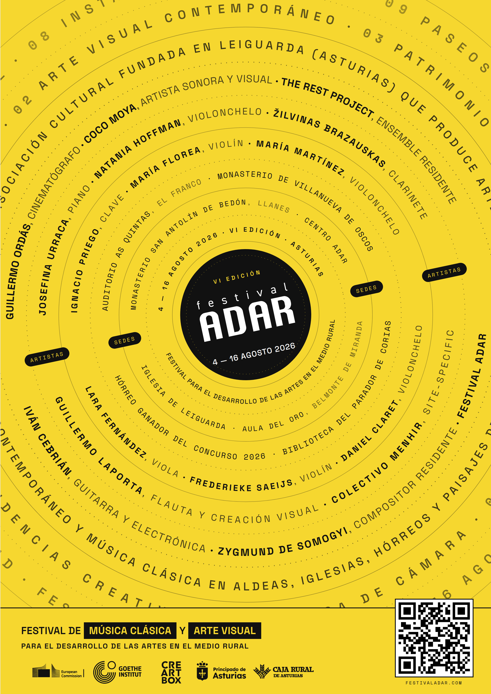

Festival ADAR 2026

ADAR returns to rural Asturias for its sixth edition: two weeks of chamber music, site-specific performance, and visual-art residencies set in churches, hórreos, mountain villages, and the auditoriums of the region.
The 2026 edition builds around three threads - a chamber-music core with international guests, a touring sub-programme ("ADAR en Ruta") that brings concerts to small Asturian towns, and a series of micro-concerts in unconventional spaces.
Festival schedule
- Aug 4De danzas y sonatas · micro concierto · recital de claveHórreo ganador del concurso 2026
- Aug 5La forma de la memoria · ADAR en Ruta · trío con pianoBiblioteca del Parador de Corias, Cangas del Narcea
- Aug 6La forma de la memoria · ADAR en Ruta · trío con pianoMonasterio de San Antolín de Bedón, Llanes
- Aug 7Umbral Zero · música minimalista y arte visualAula del Oro, Belmonte de Miranda
- Aug 8Colectivo Menhir · intervención sonora site-specificPalomar de Leiguarda, Belmonte de Miranda
- Aug 9Colectivo Menhir · intervención sonora site-specificPalomar de Leiguarda, Belmonte de Miranda
- Aug 11ADAR en Ruta · música de cámara y arte visualAuditorio As Quintas, A Caridá (El Franco)
- Aug 12Micro concierto durante el eclipse · quinteto con pianoCentro ADAR, Leiguarda
- Aug 13ADAR en Ruta · música de cámara y arte visualMonasterio de Villanueva de Oscos
- Aug 14Equilibrium · muestra de residencia · The Rest ProjectSegundo hórreo ganador del concurso 2026
- Aug 15Paseo Sonoro en LeiguardaCalles de Leiguarda
- Aug 16Clausura · concierto de quinteto y espichaIglesia de Leiguarda
Performers
- Guillermo Laportaflute · artistic direction
- Josefina Urracapiano
- Frederieke Saeijsviolin
- María Martínezcello
- Ignacio Pregoharpsichord
- Maria Floreaviolin
- Lara Fernándezviola
- Daniel Claretcello
- Natania Hoffmancello
- Žilvinas Brazauskasclarinet
- Colectivo Menhirsound art · Coco Moya & Iván Cebrián
About CreArtBox
CreArtBox is a New York–based chamber music ensemble founded in 2013, performing at The DiMenna Center for Classical Music and on tour internationally. The ensemble's New York Series presents approximately six productions a year - combining commissioned premieres, reimagined classics, and collaborations with visual artists, filmmakers, and writers.
In parallel, CreArtBox runs Festival ADAR each August in rural Asturias, Spain - an international arts festival pairing chamber music with site-specific performance in churches, hórreos, and mountain villages. Both the New York Series and Festival ADAR are produced by CreArtBox, Inc., a 501(c)(3) non-profit.